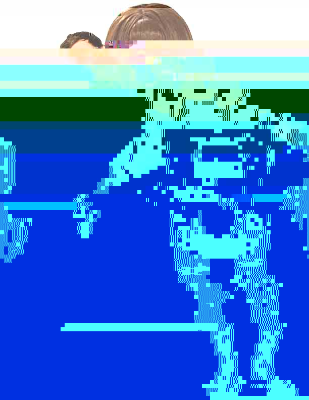
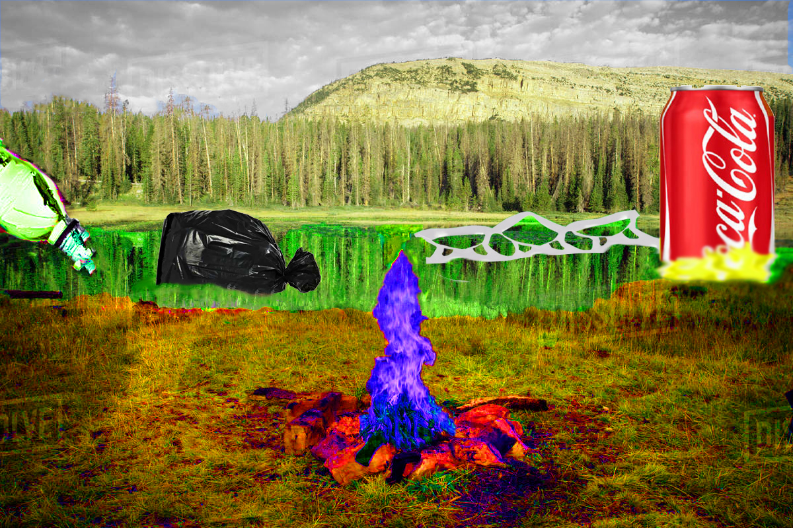
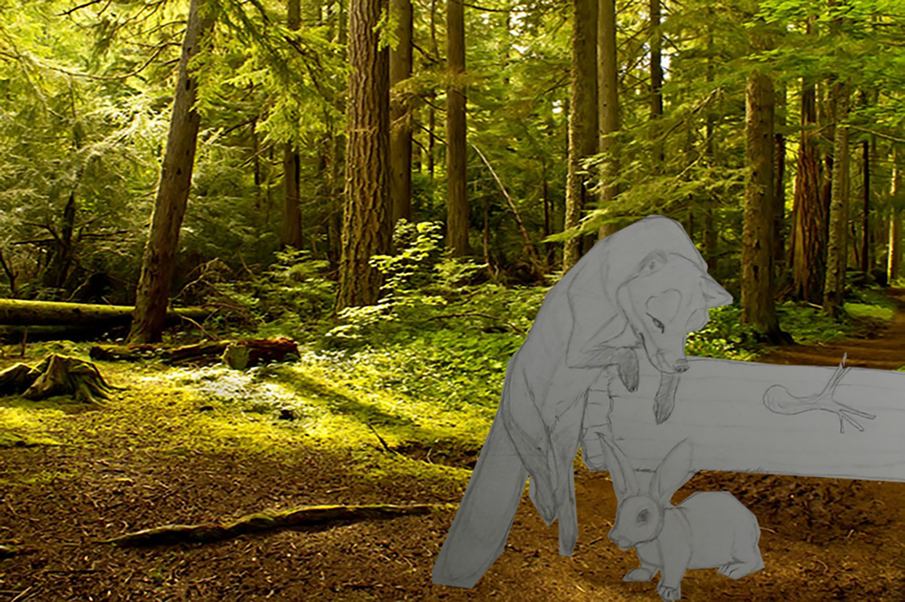
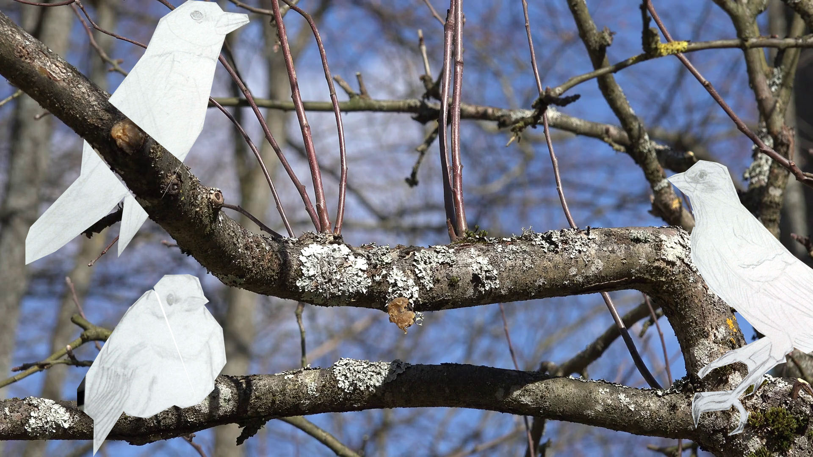
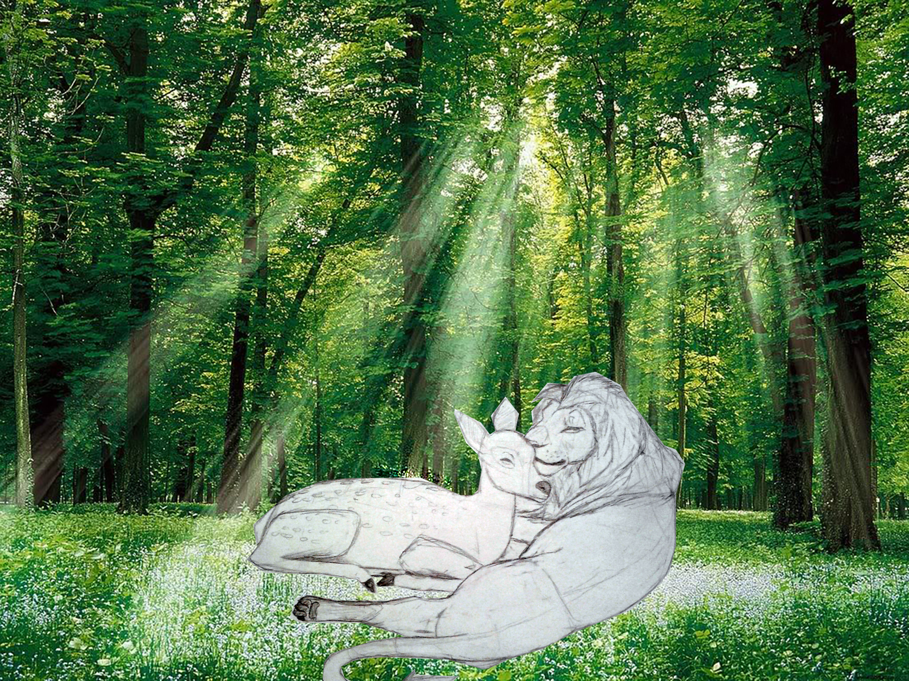

Exqusite Cyborg, Digital Image, 2019
This is a glitched image that was created in class. We created the intial png in groups we began with multiple images and began to put them all together to create a "cyborg". We than had to glitch the artwork through audacity or another medium if we could not get it to work. I used an online website in order to glitch this piece and I think this piece came out pretty interestingly as you can see the outline of the figure still.

Surreal Nature, Digital Image, 2019
This is an image that was created in photoshop. I used a a forest-like area as the background and then found images of trash and debris online. The reason that I created this image to go off of the fact that we are becoming more and more aware of how our garabge and waste is affecting our environment.
Signal, Howling, 1:00, 2019
This piece combines sounds that I had collected around school. I used the sound of knocking on a door, the rattling of fingers on glass, and the sound of the wind outside. I used these sounds to create a new type of sound that I feel kind of sounds spooky and faintly like howling and this would be ideally presented in a large and dark room.
Where am I?, Digital Video, 1:21, 2019
This digital video uses recorded footage I filmed around school during nighttime. I used the interior of the art building, lights flashing outside and a lightpole in order to create a dark and atmospheric video. I did this to emulate found footage like horror movies as well as online webseries.

Horsehousing, Interactive Net Art, 2019
This interactive net art piece is based on early internet memories. In order to achieve this effect, my partner and I created two rooms one for strange images that reminded us of old internet images and another room that reminded us of a old film reel playing an old video.
Click Here for Site
Rectangles, Interactive Net Art using p5.js, 2019
This is a net art piece which uses the p5.js programming language to create an interactive moving rectangle. This allows to click a constantly color-changing and moving rectangle to earn points.
Click Here for Site



Paper Menagerie, Composite Art using Photoshop, 2019
This is a composite art piece in which I used photoshop in order to create a series of image depicting animals. The way I had thought of this idea was through realizing what an interesting idea it would be to combine a paper drawings with real-life environments. I had decided to make animals my subject as well as nature in order to create a surreal image. I was pleased with the outcome as it had comeout how I had wanted.